INTRODUCTION - ENGINE STARTING
- Path
- Descriptions > 55 ELECTRICAL EQUIPMENT > 5520 ENGINE STARTING > INTRODUCTION - ENGINE STARTING
- Kind
- system description
- Applies to
- all engines; all production periods
- Interactive page
- https://sloeber94.github.io/elrnDB-fCrm/en/#/194001926
Applies to: all engines; all production periods
5520A IGNITION SWITCH
T.e.g. module “transmitter for entry and go”
The TEG is part of the Smart-Key system which comprises the following components:
- T.E.G. (Transmitter for Entry and Go) electronic key;
- TEG-Reader for radiofrequency receiver and electronic key;
- Steering Lock Node NBS.
The Smart-Key system carries out the following functions on the vehicle:
- vehicle access through remote control radiofrequency recognition;
- vehicle ignition/starting through immobilizer system;
- power supply distribution (+15, INT/A, 15/54, +50) through Steering Lock Node (NBS);
- mechanical steering lock/release;
- mechanical emergency back-up key.
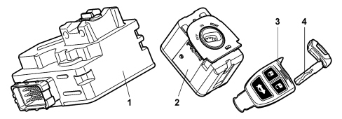
1 - Steering Lock Node (NBS)
2 - T.E.G. Reader Node (NTR)
3 - T.E.G.
4 - Back up insert
Operation
Inserting the teg in the teg reader
The TEG can be turned to 3 different positions inside the TEG Reader: two stable (OFF and ON) and one unstable (START).
The position recognition conditions take place by means of the change in status of the four switches TEG_IN, TEG_MAR, TEG_Crank1 and TEG_Crank2.
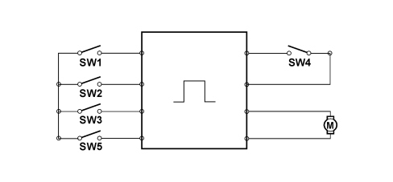
SW1, Teg IN
SW2, Teg MAR
SW3, Teg CRANK1
SW4, Teg UNLOCK
SW5, Teg CRANK2
M, Engine
The TEG can only be inserted in the reader in the OFF position and this causes the change in status of the TEG_IN switch with the consequent wake up of the CAN and the sending, via the NBS B-CAN, of the Power ON request (+15) to the Body Computer.
If the TEG is recognized, the steering is released and the NBS sends the TEG Reader the signal to release the mechanical mechanism preveting the rotation of the TEG in the reader.
The activation of the release changes the status of the TEG_lock switch. This switching causes a break in the power supply for the locking/unlocking motor.
If whilst turning the TEG from the OFF position to the ON position the speed of the manoeuvre causes sticking, the manoeuvre can be completed without having to return the TEG to the OFF position.
If the TEG change in status information (from Locked to UnLocked) does not arrive within 400 ms or the key remains in the Locked condition, the customer will be advised via the instrument panel and should proceed with unlocking it using the emergency procedure described later on.
If the TEG is not recognized, the NBS will not release the steering and will send a warning message to the Instrument Panel Node (NQS).
Therefore, the reader can only be turned to the ON position if a valid TEG is inserted in order to provide the +15 and activate the vehicle starting stage in the START position.
Key on
Inserting a TEG in the TEG Reader produces the unlocking of the steering by the NBS and, if all the safety conditions are met, the consequent request of the activation of the +15.
The NBS asks the NBC for permission to give the +15 and, after checking the Immobilizer code via the NTR, it releases the steering and sends the go ahead to the Power ON.
When the go ahead from the NBC is received by the NBS, the request to unlock the rotation of the TEG in the reader is made and, once a feed back signal is sent to confirm that the NTR has unlocked it , the TEG is free to be turned to the ON and START positions.
If the Immo is not recognized, the NBS does not receive the go ahead from the NBC and the steering is not released. This is also signalled at the NQS.
Once the TEG is turned to the ON position the TEG_ON switch changes status and the NBS activates the +15/54, INT and INT/A loads.
On versions with automatic transmission if, in the +15 state, the NBS detects, via the CAN, that the gear lever is in a position other than P (PARK), the NBS itself will lock the TEG in the reader by means of a special signal.
The locking of the steering by the steering lock node takes place when the TEG is extracted from the TEG Reader.
If the battery is disconnected the Steering Lock Node remains in the condition (unlocked or locked) that it is in: therefore for all workshop operations or repairs that require turning the steering with the battery disconnected, the TEG must be left inside the reader, a key on carried out (turn it to the ON position) and then turn it OFF (key off) when the battery is disconnected: the steering will thereby remain unlocked and free to turn.
Lighting
The lighting of the ring nut is managed directly by the TEG Reader and follows the B-CAN status, in particular:
- at the key on: the ring nut is always lit up;
- at the key off: the ring nut is lit up as long as the B-CAN is activated.
Once it goes to sleep the LEDs that light up the ring nut are also switched off.
Deactivation of +15 on, switching off of engine and extraction of teg
In the Key On status (from Key Off or return to this state after starting), when the TEG is turned to the OFF position, the NBS deactivates the load +15/54, INT and INT/A and activates the unlocking of the TEG in the TEG Reader.
If, at the time of the deactivation, the speed of the vehicle is more than 4 km/h, then the NBS does not command the locking of the steering when the TEG is extracted.
In this case the user is advised through the following signal at the NQS: "The steering will not be locked".
If the vehicle is equipped with automatic transmission, the TEG does not turn to the OFF position at the Key Off, but stops in an intermediate position where the key cannot be extracted. For this restriction to be removed, the gear lever must be in position P (Park).
Activation of starting
The engine is started by rotating the TEG to the unstable START position and by pressing the clutch pedal or the brake pedal (recovery function) for versions with a manual gearbox or the brake pedal only for versions with automatic transmission.
When the starting command is recognized, before activating the starter motor the NBS checks the following conditions:
- clutch/brake pedal pressed within 200 ms (timeout) of the activation of the +15
- validation of +15 signal (present at the B-CAN as well)
- starting enablement by the NBC (IMMOBILIZER check)
The starter motor is driven (+50) until the clutch/brake pedal is released or for a maximum of 10 seconds. (or the key is released).
On versions with automatic transmission, the additional condition of the gear lever being in P (PARK) must be observed.
During the starting stage, the NBS disables the INT/A power supply and the relative loads.
If starting takes place correctly, the NBS, evaluating the engine rpm signal, commands the mechanical locking of the TEG in the TEG Reader.
If the starting is not successful, the NBS cuts off the power supply to the motor (+50) and enables the INT/A. The TEG must be returned to the OFF position and the cranking procedures repeated in order to repeat the starting operation.
System signals
The Smart Key system controls several warning lights and/or sends message signals to the instrument panel for the following functions:
- vehicle access and/or alarm
- steering lock/release
- vehicle starting and switching off
- electric steering lock failure
- failed TEG recognition
- steering not locked signal
- TEG reader failure signal
- TEG in reader signal when driver's door is opened at Key-Off
- signalling of insertion of the TEG in the TEG Reader
Components
Remote control
The remote control system is made up of a radiofrequency transmitter, incorporated in the TEG, which sends the variable code to the receiver.
The user can carry out the following actions using the TEG:
- central locking - unlocking of the doors/boot;
- opening - closing the windows;
- switching on the courtesy light;
- switching on-off of the alarm (if present).
The transmitter has a range of about 20 m.
Receiver
The radiofrequency receiver is built into the TEG-Reader module.
It memorizes up to eight transmitters and allows the remote control operations mentioned above.
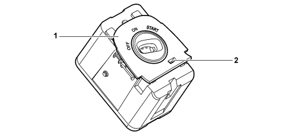
1 – TEG Reader
2 - Slit for emergency unlocking
The receiver has the following functions:
- receiving and decoding the signals coming from the transmitter.
- managing the transmitter programming.
- managing the command for opening and closing of the doors.
- to carry out self-diagnosis.
The receiver can memorize up to eight remote control codes.
Teg with three buttons
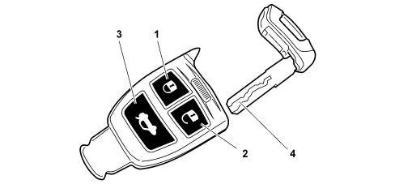
1 - door locking
2 - door unlocking
3 - boot release
4 - back up key
The TEG is an electronic device which, used in place of a traditional key, produces:
- access to the vehicle by carrying out all the normal operations by remote control:
- starting of the vehicle: if introduced and turned inside the special reader, it deactivates the electric steering lock and provides the enablement for starting in accordance with the logics described previously.
The remote control section has a 433.92 MHz transmitter with 3 control buttons for the vehicle access functions and a special retractable plastic insert that can be extracted manually.
Mechanical emergency key (back up)
In emergencies, the TEG is used like a regular mechanical key in order to carry out manoeuvres on the mechanical back-up pawls (door opening-closing, air bag activation-deactivation, etc.).
The mechanical key is a special insert that can be extracted manually from the TEG.
Extraction in an emergency
The TEG can be released in any circumstances, even with the vehicle moving, through the mechanical emergency insert.
In effect, if there is a fault that prevents the rotation of the TEG and it returns to the OFF position, the slot can be mechanically unlocked by following the procedure described below.
- extract the back up key from the TEG;
- insert the emergency key in the slot and push it right in.
This manoeuvre will manually activate the unlocking of the retaining motor and the rotation of the TEG will be released.
The NBS will detect that this operation has been carried out and will send a signal to the instrument panel to indicate that the steering is not locked.
If the TEG is extracted in an emergency, the steering will NOT be locked.
Similarly, if the TEG is extracted with the speed of the vehicle above 4 Km/h, the steering will NOT be locked.
Fiat code system
The TEG also manages the operation of the Immobilizer system known as the FIAT CODE:
The system is based on the transmission and reception of a radiofrequency signal with a rolling code.
Each transmission produces a rolling code managed by a mathematic algorithm.
The tramsmission message is memorized in the receiver in a non volatile memory (EEPROM) in such a way that information is not lost even if the batteries are replaced.
Programming the remote control
On delivery, the receiver contains the universal code 00H AAH AAH A2H that allows activation in the factory with a universal transmitter, this code should then be deactivated at the first programming.
Proceed as instructed by the Examiner.
Pin out
The rear view of the TEG Reader with the connector and pin out is illustrated below.
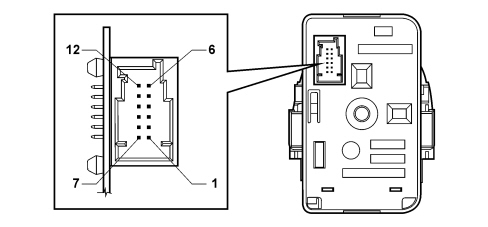
Pin out (12-way connector)
PIN | FUNCTION |
|---|---|
1 | B-CAN B |
2 | B-CAN A |
3 | +30 |
4 | GND |
5 | OUT CRANK1 for NBS |
6 | OUT KEY ON for NBS |
7 | n.c. |
8 | n.c. |
9 | n.c. |
10 | n.c. |
11 | OUT CRANK2 for NBS |
12 | TEG inserted signal (TEG in) to NBS |
The view of the NBS with the connector and pin out is illustrated below.
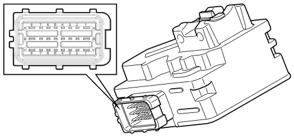
Pin out (24-way connector)
PIN | FUNCTION |
|---|---|
A1 | INT output (internal connection with 15/54 output) |
A2 | B-CAN A |
A3 | B-CAN B |
A4 | GND |
A5 | Clutch switch (for versions with manual gearbox only) |
A6 | TEG_IN signal from NTR |
A7 | N.C. |
A8 | N.C. |
B1 | 15/54 output |
B2 | N.C. |
B3 | N.C. |
B4 | Starting enablement signal (input) for NCA |
B5 | On from TEG (not with Easy Go) |
B6 | N.C. |
B7 | N.C. |
B8 | +50 for starter motor |
C1 | +30 battery power supply |
C2 | N.C. |
C3 | N.C. |
C4 | Brake switch (NA contact) |
C5 | TEG_CRANK1 signal from NTR |
C6 | TEG_CRANK2 signal from NTR |
C7 | Brake switch (NC contact) (only for versions with automatic transmission) |
C8 | INT/A for CPL |
5520B STARTER MOTOR AND COMPONENTS
Composition
The starting system is composed of the Smart Key system described above and the starter motor which is connected directly to the battery.
For some time now, in addition to motors with series or series/parallel windings, motors have been developed with ceramic manget ferrite type permanent magnet energizing.
Circular magnet with magnetically preorientated crystals
The rough components are directed into the desired shape by pressing and extrusion. Lastly, after a thorough baking procedure, the material turns into the magnets that have a black ceramic structure. The magnetizing treatment takes place during the manufacturing process.
The magnets have a circular sector and thereby replace the polar part and the winding.
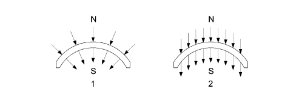
1 - Radial orientation
2 - Parallel orientation
Stator-inductor
The positioning of the magnets cannot be done through strong compression or by means of riveting because the magnets are reasonably fragile: they are secured by flexible means, clipw which, in some cases, are stuck to the casing. The casing assembly can be compared with a simple mechanical component without wires to be fitted using two special bolts; it has 6 magnetic poles.
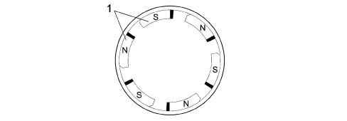
1 - Permanent N-S magnets
Rotor-armature (with epicyclic reduction unit)
The rotor-armature is illustrated in the diagram below.
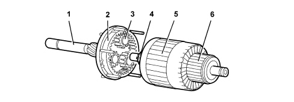
1 - Shaft
2 - Ring gear/crown wheel
3 - Satellite/planet gears
4 - Pinion/sun gear
5 - Armature
6 - Commutator/switch
Rotor-armature (with epicyclic reduction unit)
Given that the magnetic field is produced by permanent magnets, the energizing is the same in all motor operating conditions; in addition, as there are no energizing windings, there is no energizing current or ohmic resistance: the total resistance only depends on the armature circuit. The rotation speed is only influenced by the current that passes through the blades and reaches the rotor depending on the voltage. Since the motor is equipped with permanent magnets, i.e. with fixed polarity, the direction of rotation depends on how the current is sent to the blades.
When rotating the rotor transmits motion to the three satellite gears fitted on special supports that transmit their drive torque to the ring gear or crown wheel in one piece with the output shaft where the pinion is located and the engine flywheel is rotated. The optimum reduction radio 1:4.26 is 4.26 revs of the rotor for every revolution of the ring gear and the presence of permanent magnets makes it possible to produce small simply designed motors with a comparable power output in relation to motors with windings.
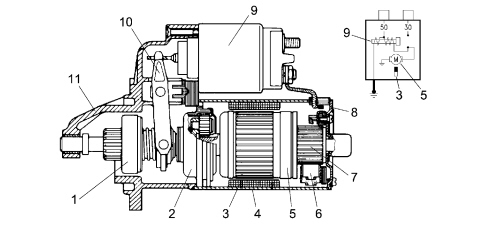
1 - Pinion with free wheel
2 - Epicyclic reduction unit
3 - Inductor permanent magnets
4 - Polar casing assembly
5 - Armature or rotor
6 - Blades
7 - Commutator
8 - Commutator side support
9 - Engagement relay
10 - Lever
11 - Control side support
The following starter motor will be fitted on the 2.2 petrol version.
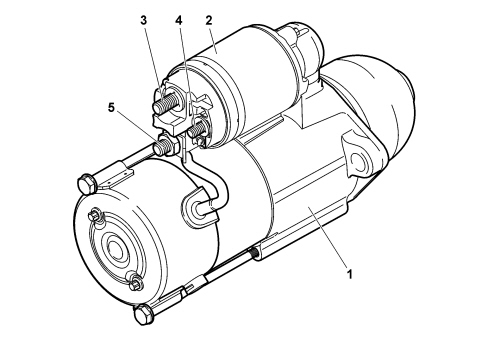
1 - Motor frame
2 - Engagement relay
3 - Battery terminal
4 - Alternator terminal
5 - Motor terminal
Technical data
The types of starter motor adopted on this vehicle are summarized in the table.
1.8 16V | 2.2 16V | 1.9 Multijet 8V | 1.9 Multijet 16V | 2.4 Multijet 8V | |
|---|---|---|---|---|---|
Manufacturer | - | Delco- Remy | Bosch | Bosch | Mitsubishi |
Make and type | - | PG260N | R74-L45 (R) R78 - M45 (*) | R74-E25 R78 - M45 (*) | -- |
Voltage | - | 12 | 12 | 12 | 12 |
Nominal power (KW) | - | 1.8 | 2 | -- | 2 |
Rotation, pinion side | - | Right | Right | Right | Right |
No. of poles winding | - | -- | 6 | 6 | -- |
(*) Versions for Cold Countries or automatic transmission